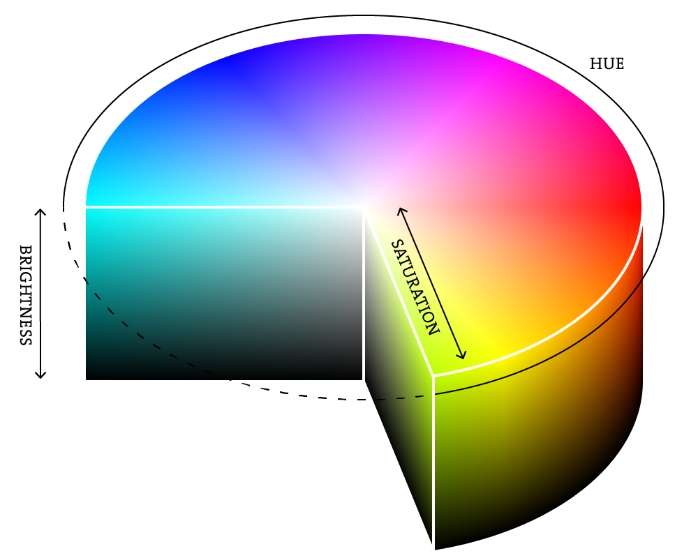

00 — Getting Started: How Computer Graphics Work
HSB and HSL: colour by hue, saturation and brightness
RGB is how a screen thinks about colour; it's not always how a person thinks about colour. If you want "the same blue, but darker" in RGB, you have to work out new red, green and blue values by hand. HSB (Hue, Saturation, Brightness — sometimes called HSV) and the closely related HSL (Hue, Saturation, Lightness) describe colour in a way closer to how people actually choose colours:
- Hue — which colour, as a position around a colour wheel (
0–360, since a wheel is a circle of degrees):0is red,120is green,240is blue, and so on back around to red. - Saturation — how vivid or washed-out the colour is:
100is the fully saturated pure hue,0is completely washed out to grey. - Brightness / Lightness — how light or dark the colour is: pushing this toward
0fades any colour to black.
p5 uses RGB by default, but colorMode() switches what fill(), stroke() and background()
expect:
colorMode(HSB, 360, 100, 100); // hue 0-360, saturation 0-100, brightness 0-100
fill(200, 80, 90); // a bright, vivid, sky blue
fill(200, 20, 90); // the *same hue*, but pale/washed out
fill(200, 80, 30); // the *same hue*, but darkChanging just one number — saturation or brightness — while leaving hue fixed is exactly the kind
of thing that's awkward in RGB (all three of red, green and blue usually have to change together)
but direct in HSB. colorMode(RGB) switches back to the default at any point.

Figure: an HSB colour wheel/cylinder — hue running around the outside, saturation running from the centre (grey) to the edge (vivid), brightness running from the bottom (black) to the top (full colour).